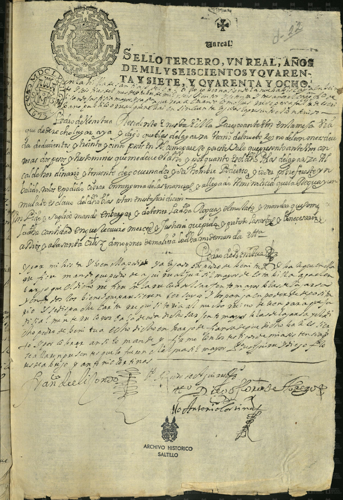
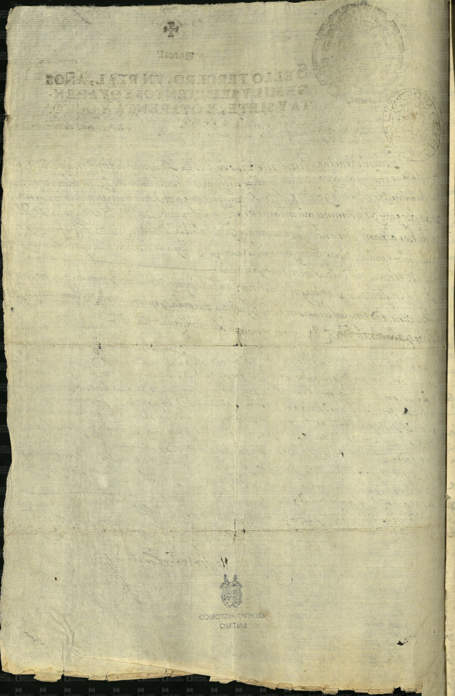

Blas de la Garza


| Fondo | Presidencia Municipal (PM) |
| Firma AMS | AMS, PM, c 2, e 51, d 22, 1 f |
| Fecha | 26 de septiembre de 1673 (según la ficha del catálogo) |
| Descripción de la ficha del catálogo (tal cual) | Pedro de Ventura demanda a Blas de la Garza, alcalde ordinario del Nuevo Reino de León, el pago de 235 pesos. |
| Id de ficha en el portal | 48676 |
| Personas indexadas en la ficha | Pedro de Ventura, Blas de la Garza |
Transcripción pendiente. La imagen se publica con la descripción de la ficha del catálogo; no se ha leído línea por línea.
Imagen y ficha: Archivo Municipal de Saltillo, Sefarad MX. Fuente: Archivo Municipal de Saltillo, portal del archivo digital (Presidencia Municipal). Verificado y avalado por Sefarad MX · genealogiasefardi.site.